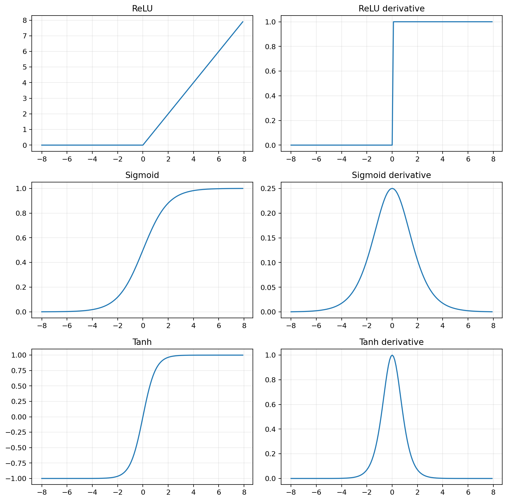
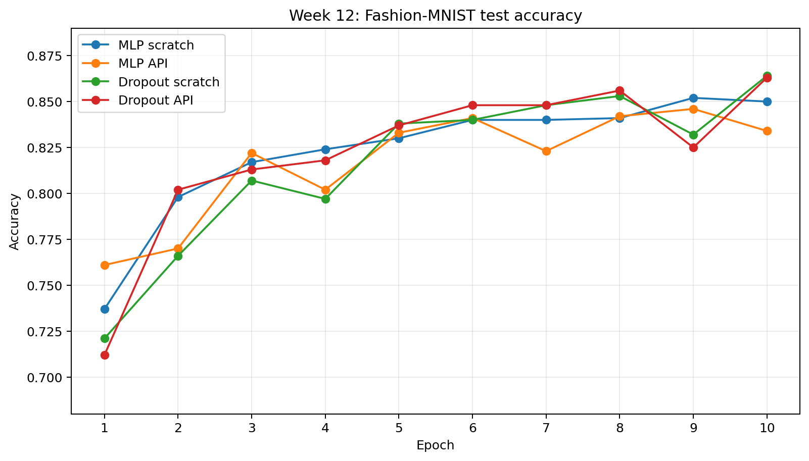
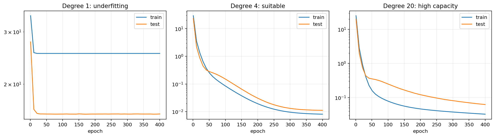

本周学习《动手学深度学习》第4章4.1至4.6。内容从多层感知机和激活函数开始，接着用多项式实验观察欠拟合与过拟合，最后复现权重衰减和Dropout。代码仍然分成独立案例，并在RTX 4060上完成四组Fashion-MNIST训练。
这篇复盘主要记录
- 为什么只堆叠线性层仍然只是线性模型
- ReLU怎样给网络加入非线性表达能力
- 欠拟合、过拟合与模型容量之间的关系
- 权重衰减和Dropout如何限制模型过度记忆训练集
一、为什么要增加隐藏层
上周的softmax回归把784个像素直接映射到10个类别。它只能学习一层线性关系，而图片中一个像素是否重要，往往取决于周围像素。多层感知机先让隐藏层学习一组中间表示，再由输出层完成分类。
H = ReLU(XW₁ + b₁)，O = HW₂ + b₂
可以把隐藏层理解为一组“中间判断”：它不直接宣布图片属于哪一类，而是先学习轮廓、亮暗组合等更适合分类的表示。
二、只堆线性层为什么没有用
如果隐藏层后面没有激活函数，两层线性变换可以合并为一层：
H = XW1 + b1
O = HW2 + b2
= X(W1W2) + (b1W2 + b2)无论堆多少层，最后仍然是一条线性公式。ReLU等非线性激活函数让这种合并不再成立，网络才有能力表示弯曲、分段和更复杂的关系。
三、三种激活函数

| 激活函数 | 输出范围 | 直观理解 |
|---|---|---|
| ReLU | [0,+∞) | 负数归零，正数原样通过 |
| sigmoid | (0,1) | 把任意数字压缩成类似概率的值 |
| tanh | (-1,1) | 以0为中心压缩输入 |
本章MLP采用ReLU。它计算简单，正区间梯度为1，比隐藏层中的sigmoid更不容易让梯度快速变小。
四、MLP从零实现
Fashion-MNIST图片展平后有784个输入。书中使用256个隐藏单元和10个输出类别：
def forward(images):
X = images.reshape((-1, 784))
hidden = relu(X @ W1 + b1)
return hidden @ W2 + b2从零版要手动保存W1、b1、W2、b2；简洁版则用Flatten、Linear和ReLU组合。两种写法不同，但前向计算结构一致。
五、四组Fashion-MNIST训练

| 模型 | 第10轮训练准确率 | 第10轮测试准确率 |
|---|---|---|
| MLP从零版 | 86.4% | 85.0% |
| MLP简洁版 | 86.5% | 83.4% |
| Dropout从零版 | 87.4% | 86.4% |
| Dropout简洁版 | 87.3% | 86.3% |
不能根据这一次实验就断言“从零版一定比简洁版好”或“Dropout一定提升准确率”。随机初始化、样本顺序和训练轮数都会让测试准确率波动。更可靠的比较需要多次重复、控制变量，并观察整段曲线。
六、欠拟合和过拟合
欠拟合是模型连训练数据的规律都没有学好；过拟合是训练数据学得很好，但把噪声和偶然细节也记住了，换到测试数据表现下降。

1阶：训练损失=25.3620，测试损失=15.8694
4阶：训练损失=0.0081，测试损失=0.0112
20阶：训练损失=0.0326，测试损失=0.0625这里20阶模型的训练损失没有低于4阶，是因为有限轮数内高阶参数更难优化；但它的训练与测试差距更大，已经能看到高容量模型更容易出现泛化问题。过拟合程度还会受到数据量、噪声和训练时间影响。
七、权重衰减
权重衰减在原损失后加入权重大小的惩罚项。模型若想使用非常大的权重去贴合少量训练样本，就要付出额外代价：
总损失 = 原损失 + λ × ||w||² / 2
lambda=0：测试损失=185.0453，权重范数=13.3392
lambda=3：测试损失=30.4501，权重范数=5.4014这个小样本高维实验里，加入权重衰减后权重整体变小，测试损失明显下降。λ越大并不一定越好，过强的惩罚也可能让模型学不动。
八、Dropout
Dropout训练时随机把一部分隐藏单元设为0，并放大留下的值以保持期望不变。可以类比小组练习时随机让一部分同学暂时不回答，迫使其他成员也学会解决问题，避免整个小组只依赖固定几个人。
mask = (torch.rand(X.shape, device=X.device) > probability).float()
return mask * X / (1.0 - probability)关键点是：Dropout只在训练阶段开启。测试时调用model.eval()，使用完整网络预测，不能继续随机丢弃隐藏单元。
九、与PDF代码不同的地方
- PDF为2021年版本，本次使用Python 3.9.25、PyTorch 2.8.0和CUDA 12.6。
- 不依赖
d2l工具包，训练、评估、Dropout和L2惩罚函数直接写在本周代码中。 - Windows独立脚本使用
num_workers=0，避免DataLoader子进程重复执行主文件。 - 书中函数式网络改成继承
nn.Module，只是为了统一调用train()、eval()和CUDA迁移；前向公式保持一致。 - 所有Fashion-MNIST模型自动使用CUDA，没有可用GPU时仍会回退到CPU。
- Matplotlib图标题使用英文，避免本机默认字体缺少中文字形。
十、目前还不熟的地方
- 超参数选择。隐藏单元数、学习率、权重衰减系数和Dropout概率目前主要沿用书中设置。
- 泛化判断。知道不能只看训练损失，但还需要练习使用验证集和重复实验选择模型。
- 高阶模型优化。20阶模型的表现同时受模型容量和优化过程影响，不能把一次结果简单等同于所有过拟合现象。
十一、下周计划
- 01计算图
继续4.7，整理正向传播、反向传播和计算图。
- 02数值稳定性
学习梯度消失、梯度爆炸和参数初始化。
- 03分布偏移
区分协变量偏移、标签偏移和概念偏移。
- 04案例准备
开始整理房价预测需要的数据处理流程。
十二、本周最值得保留的认识
隐藏层非线性容量泛化正则化
隐藏层配合激活函数带来非线性表达能力；模型容量增加后更容易学会训练数据，也更需要关注测试数据上的泛化；权重衰减和Dropout等正则化方法用于限制模型过度记忆。